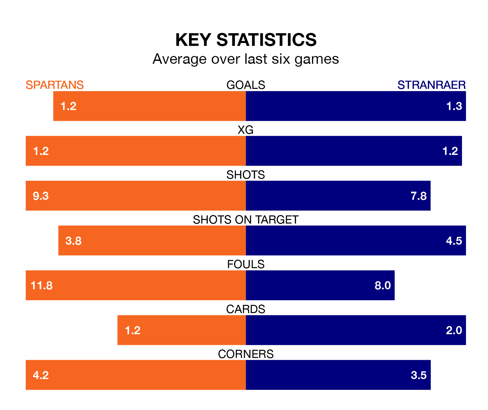

Relegation candidates Stranraer face a challenge away against high-flying Spartans at the Ainslie Park Stadium on Saturday.
Stranraer are ninth in the League Two table, and have picked up eight wins and seven draws in their 32 games to date.
The Spartans, meanwhile, are fourth in the standings with 50 points, having won 13 and drawn 11, and are 15 points behind table-toppers Stenhousemuir.
In Blair Henderson, Spartans have the league's most on-form striker so far this season. He has notched 17 goals in 31 appearances.
Stranraer's top scorers, with five goals each, are Thomas Orr and Deryn Lang.
With 48 goals in 32 games so far this season, the Spartans are the league's third-highest scorers with 1.5 goals per game. And they are conceding fewer than average, letting in 40 goals at a rate of 1.2 per game.
The away side, meanwhile, are below average scorers, with 1.1 goals per game, compared to a league average of 1.3. They have conceded 1.6 goals per game.
The hosts are in mixed form in League Two, with one win and four draws from their last six games.
With a win and a draw over that period, Stranraer's form is worse – they have taken four points from 18, compared to Spartans's seven.
In the last five years, Spartans and Stranraer have played each other on four occasions. Spartans won three of them and Stranraer one.
On average, the Spartans scored 2.2 goals and Stranraer 2.2 in those matches.
Their last meeting was on February 17, when Spartans won 2-1 away.
Spartans's last match was on April 6, a 2-2 draw against Elgin City, with Henderson getting the goals for the Spartans.
Stranraer lost 1-0 against Clyde last time out, also on April 6.
Updated: 11:20 (UTC), 09/04/24